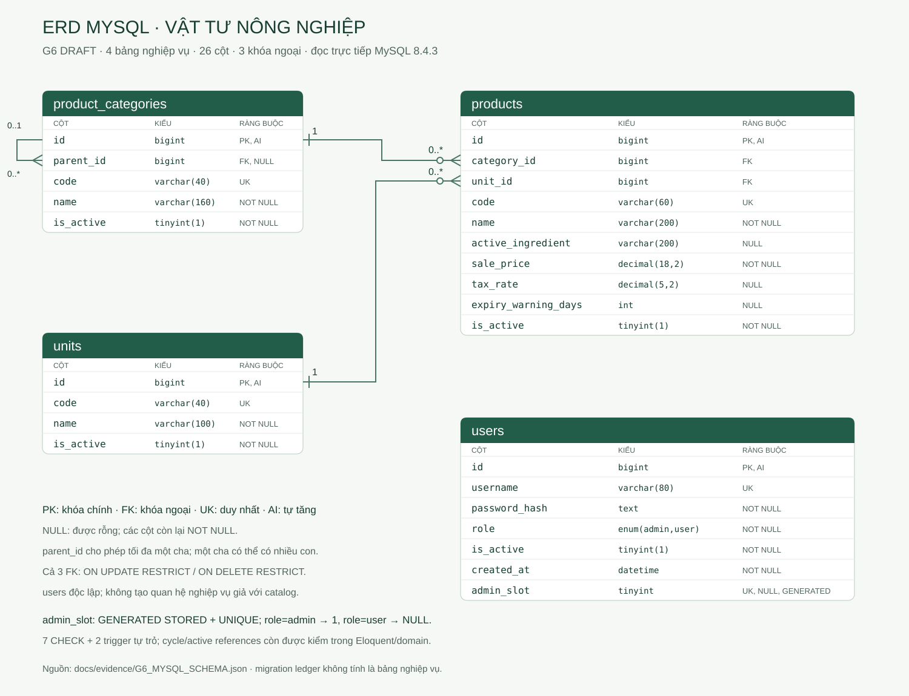
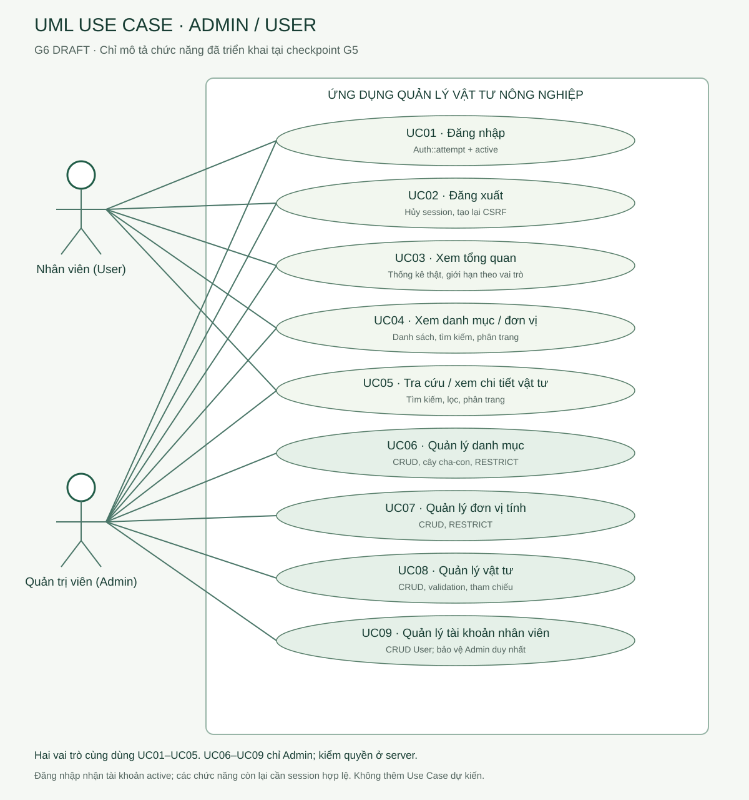

Quản lý vật tư nông nghiệp
Nhóm 6 · Sơ đồ từ schema MySQL và chức năng G5 thực tế. Không sửa source hoặc dữ liệu demo.
ERD MySQL thực tế
4 bảng · 26 cột · 3 FK · schema SELECT từ MySQL8.4.3
Mở SVG kích thước đầy đủ
UML Use Case
2 actor · 9 Use Case · 14 association · chức năng G5 đã triển khai
Mở SVG kích thước đầy đủ
Source G5 đã khóa: 68770c0d2dc8b0e743a69564112be41eed54dd69. Hồ sơ G6 chưa commit/push.